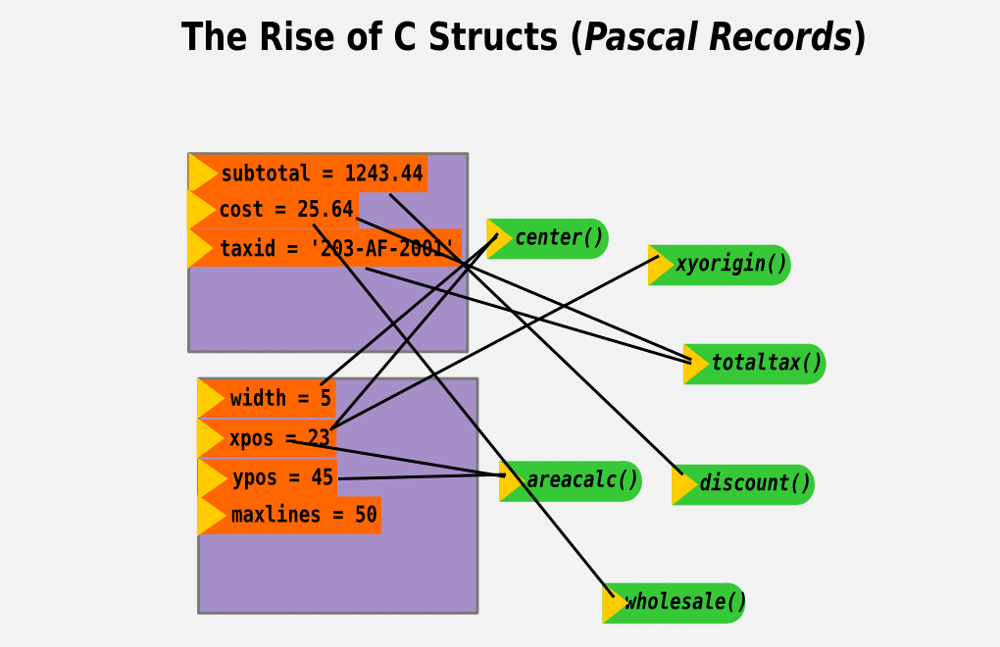
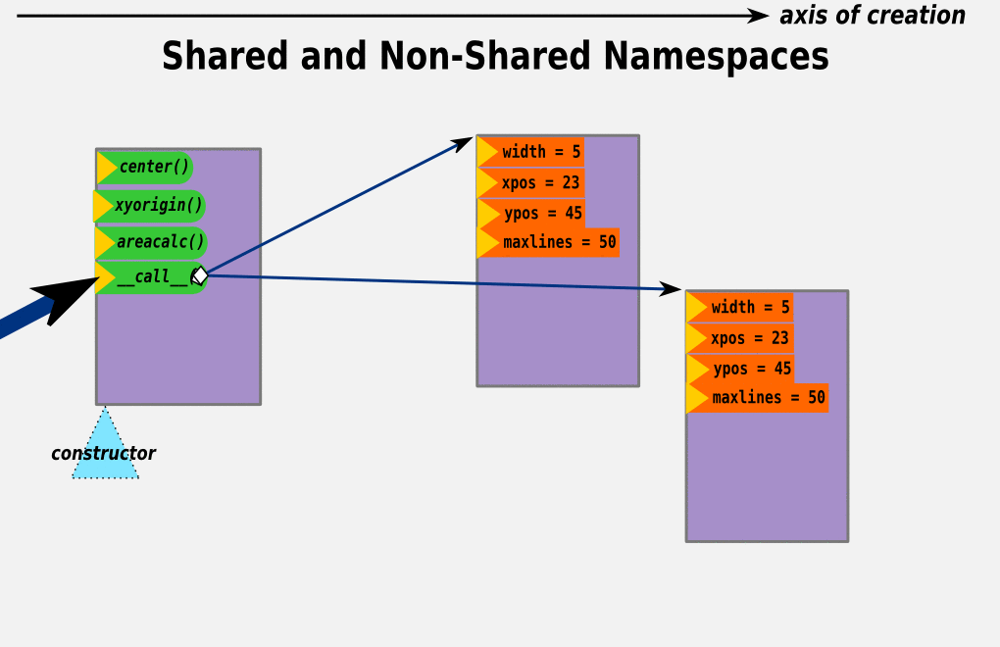
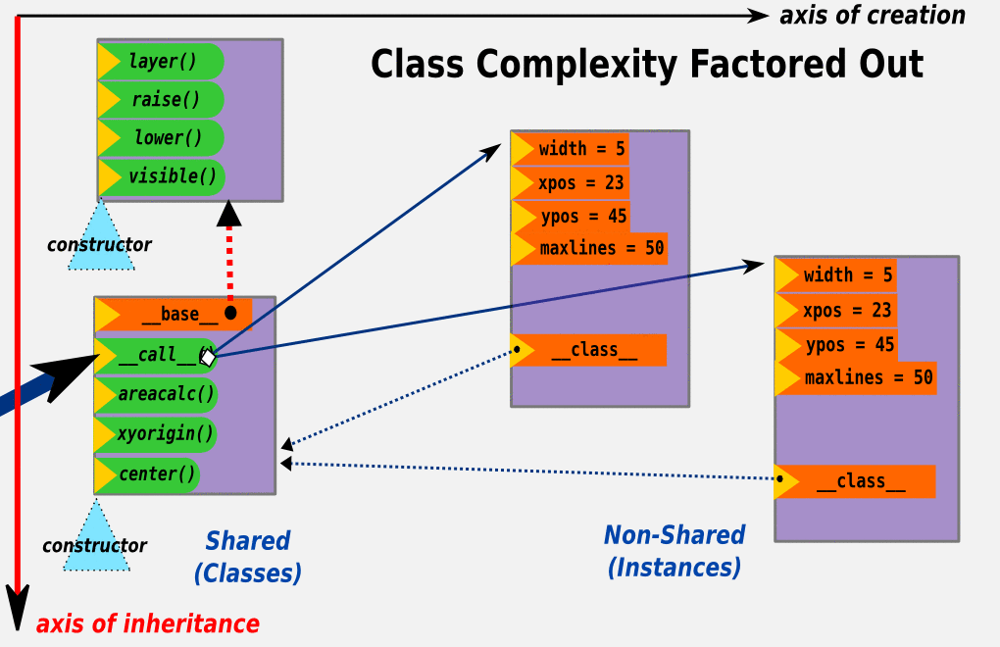
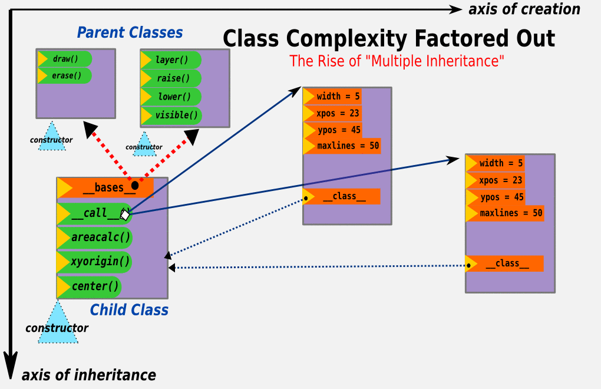
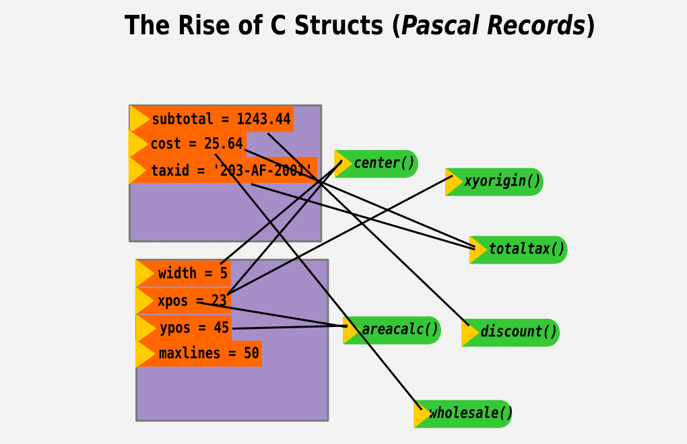
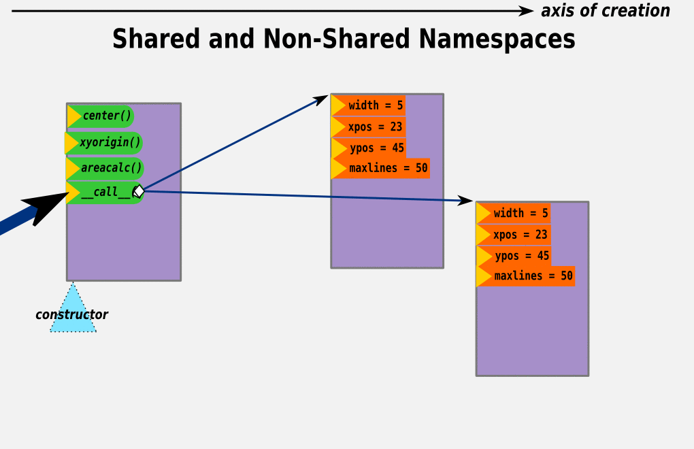
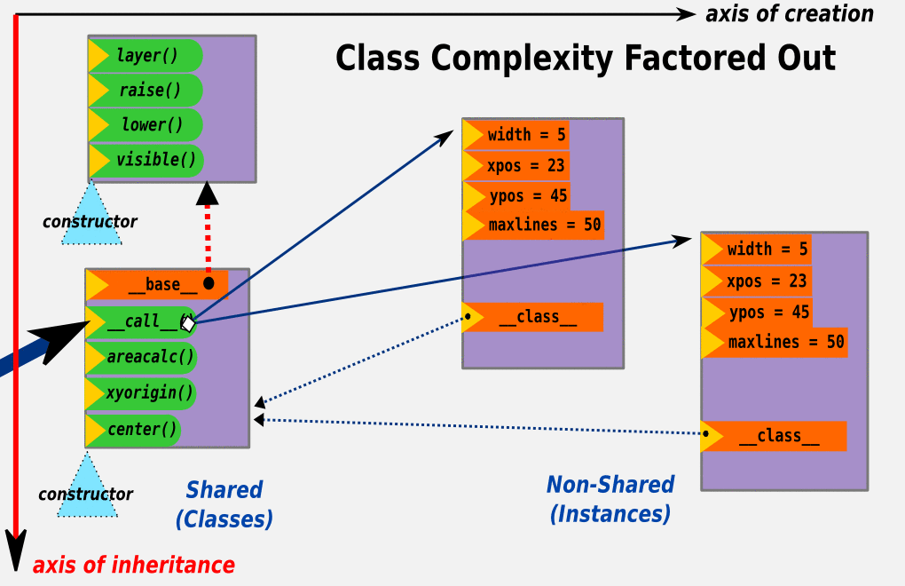
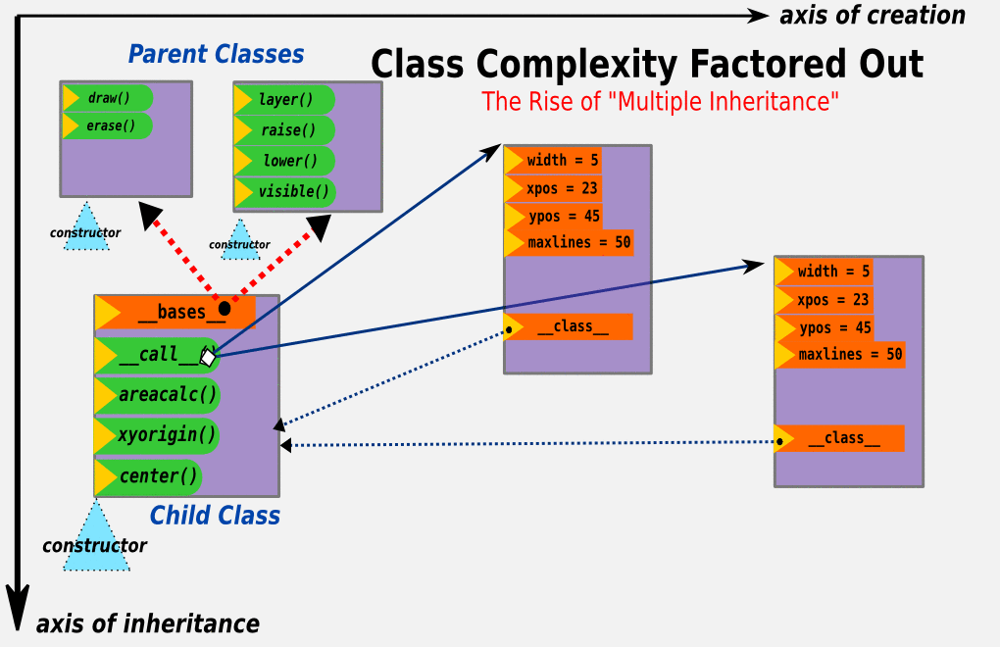

The Magic of Metaprogramming

| Author: | Jeff Rush <jeff@taupro.com> |
|---|---|
| Copyright: | 2011 Tau Productions Inc. |
| License: | Creative Commons Attribution-ShareAlike 3.0 |
| Date: | March 9th, 2012 |
| Duration: | 45-minutes |
| Difficulty: | Advanced |
| Keywords: | metaprogramming, data structures, language, techniques |
Learn the magic of writing Python code that monitors, alters and reacts to module imports, changes to variables, calls to functions and invocations of the builtins. Learn out to slide a class underneath a module to intercept reads/writes, place automatic type checking over your object attributes and use stack peeking to make selected attributes private to their owning class. We'll cover import hacking, metaclasses, descriptors and decorators and how they work internally.
Orientation Diagram: Instances, Classes and Metaclasses
graphics/history-of-objects.svg (source material)
- make numbers in instances different
- seq-hc-justbits-X
- title 'a fable (literary licence) of objects' in the beginning there was just 1's and 0's (show a heap of them)
- seq-hc-funcs-vars-X
- they separated into code (functions) and data (variables); a function could reach out and change any variable and each variable had to have a unique name. It was unclear which vars went with which functions.
- seq-hc-vargroups-X
- Vars got grouped together, int C structs or Pascal records. But functions were still separate.
- seq-hc-groupings-X
- Functions became got added into the var groupings.
- seq-hc-group-ctor-X
There was a 'constructor' function that created each var grouping, according to what was needed each time.
- seq-hc-protos-X
- Then instead of rebuilding, a var group was used as a 'prototype object' to stamp out copies of itself. The copier was the constructor of copies, named __call__.
- seq-hc-groupsplit-X
- Lots of duplicated code, excess copying of things that are common. Decided to make two var groups, one for the shared stuff and one constructed for each instance. The shared stuff represented a 'class of similar objects', shortened to 'class'. No inheritance yet.
- seq-hc-groups-grow-X
- But the stuff shared among instances grew in size, and there was common code btw classes,
- seq-hc-delegating-X
- so inheritance was born; factoring vertically.
- seq-hc-new-axis-X
- One-dimension of creation just got a second dimension of delegation/inheritance.
- seq-hc-multi-inherit-X
- Assembly of classes was still complex, wanted more freedom to mix-and-match. Multiple inheritance was born.
- seq-hc-metaclass-X
- All these classes had code to create them, buried in the interpreter. The code got exposed into a class-like object called metaclasses.
- seq-hc-meta-as-ctor-X
- Since classes are objects, their constructor, named __call__ resides in the metaclass. One metaclass created all classes, since they were all alike in behavior. Just containers of methods mostly.
- seq-hc-submetas-X
- But then the metaclass is subclassable, making it possible to create new kinds of classes.
 






